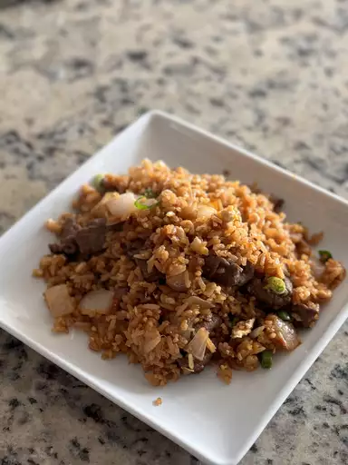

Pilau

Description
A tasty dish cooked using rice, meat and masala spice. It is a popular dish in East Africa especially in Kenya and Tanzania.
Ingredients
- Onions
- Tomato Paste
- Meat
- Rice
- Water
- Oil
Steps
- Boil the meat and water in a pan
- Once the meat is cooked strain the broth and set it aside
- Fry the onions in a pan until they're golden brown
- Add the tomato paste and stir
- Add the meat and washed rice into the pan and stir until they're well mixed
- Add the bone broth to the rice mixture and allow it to cook
- Serve with kachumbari